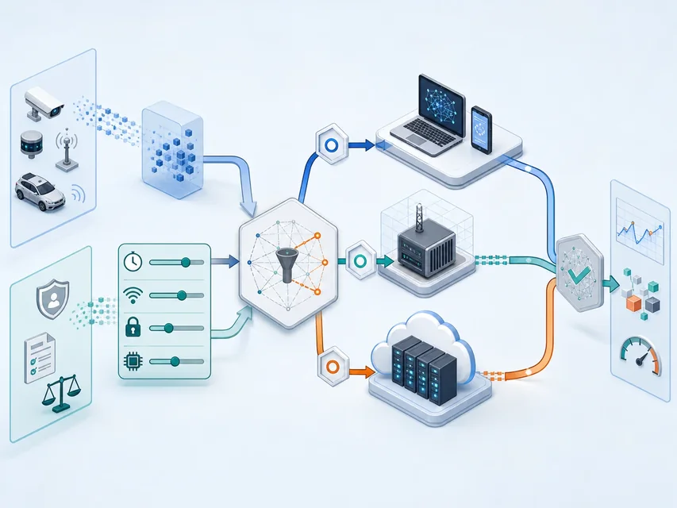
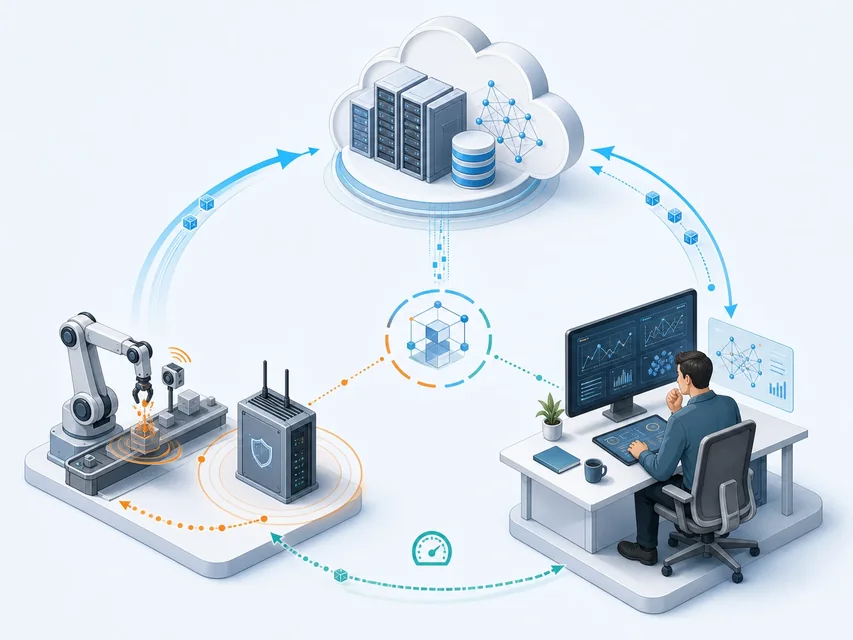

输入
温度、图像、位置、日志或人的判断
决定一项计算在哪里运行、多久必须返回、失败后谁接手
 VER. 2608
Built with impress.js
VER. 2608
Built with impress.js
为温度告警、车牌识别选择执行位置，写出响应时间、上送数据和失败处理
先写任务输入、规则和输出，再选执行位置
感知／行为输入 → 规则、算法或模型 → 结果、预测、告警或控制
温度、图像、位置、日志或人的判断
统计、识别、预测、阈值、流程或模型
标签、排序、告警、服务响应或执行指令

写清读什么数据、产出什么、多久必须完成、需要多少算力与电量、谁确认结果，任务才足以分配
同一份数据在不同任务中可能需要不同的计算位置
车辆避障可能只有极短时间，月度能耗报告可以延后计算
一台门锁的一次请求，与全城设备一年的日志规模不同
端侧有多少算力、存储、电量和上行带宽，预算能承担多少
哪些动作必须继续，哪些数据先缓存，恢复后怎样补传
原始视频、病历、模型和控制指令分别允许谁读取
谁解释、确认、接管并批准最终动作
先回答这六组问题，再判断交给设备、附近服务器、云端还是人
| 任务 | 请写输入 | 请写规则与输出 | 请补充关键约束 |
|---|---|---|---|
| 温度超限 | 填写 | 填写 | 填写 |
| 车牌识别 | 填写 | 填写 | 填写 |
| 预测维护 | 填写 | 填写 | 填写 |
| 医疗诊断建议 | 填写 | 填写 | 填写 |
不要先问“用什么 AI”，先问任务要在何时、以什么证据、由谁负责完成
端设备直接处理输入，不必把所有原始数据送出
端上：采集／筛选 → 即时响应或少量上报 可选上送边缘／云；受算力、电池、更新与安全约束
低通信延迟、少占带宽、可离线、数据较少外传
传感器、手环、家电、机器人、手机和车载计算单元
定制化可优化能效，通用化更灵活和兼容
算力、存储和电池有限；软件与密钥要更新，设备还可能被拆走或损坏
任务是否长期不变、部署多少台、以后是否升级，决定选专用还是通用设备
为固定任务设计专用硬件与软件；能效和成本可能更好，但升级和扩展更难
用标准硬件与软件承载多种任务；维护更容易，但可能过度设计并增加功耗
多装算力会增加成本和耗电；只需做固定阈值告警的传感器，不一定需要通用高性能芯片
| 场景 | 请写设备上先做什么 | 请写算力、电量、更新或失败问题 |
|---|---|---|
| 门锁开门 | 填写 | 填写 |
| 手环异常 | 填写 | 填写 |
| 摄像头监控 | 填写 | 填写 |
| 离线导航 | 填写 | 填写 |
端上处理不等于数据不上送；处理位置和上送范围都由时延、隐私与任务决定
它为现场任务提供近端执行点，但不是端到云的必经层
位置：靠近数据源的计算资源 作用：过滤／推断／协调；任务可留端、交给边或直达云
通信路径短，延迟和回传数据量可能更小
可使用服务器、加速器、存储和设备管理能力
如工厂网关筛选振动异常、加密后上送；位置近不代表天然安全
边缘服务器可先处理现场数据并快速返回；仍要写清它断线后设备做什么、谁维护服务器
任务大小、通信代价、端／边／云算力和完成时限共同决定选择
本地：端侧完成 全卸载：上传 → 边缘或云端计算 → 返回 部分卸载：按阶段拆分
任务全部在端设备完成
通信少、可离线，但受端侧资源限制
任务整体交给边缘或云端
端侧负担小，但依赖链路和远端可用性
按阶段把预处理、推断或汇总拆给端、边或云
可平衡延迟、能耗、带宽与隐私
| 任务 | 请写初步分工 | 请写校验点 |
|---|---|---|
| 实时交通告警 | 填写 | 填写 |
| 工厂振动检测 | 填写 | 填写 |
| 大规模历史分析 | 填写 | 填写 |
| 隐私摄像头 | 填写 | 填写 |
把任务拆成“必须立即完成”和“可以延后分析”的部分，卸载才有依据
用户使用共享资源池，不必自行拥有每一台底层设备
访问：任务／数据 → 共享资源池 服务：弹性计算／存储／数据库／应用
服务器、存储、网络、数据库、软件和分析能力
按需获取和释放，服务方承担部分底层管理
规模、伸缩、共享与远程访问；恢复能力取决于服务设计
断网还能否工作、数据能存在哪里、服务中断怎样恢复、供应商负责到哪、往返要多久
云端适合规模化和长期服务，但“远程可用”不等于“现场实时”
服务方承担得越多，用户管理的底层越少；可控范围随之变化
提供虚拟计算、存储和网络
用户仍需管理操作系统、运行时和应用
进一步提供运行环境、数据库和开发工具
用户聚焦应用代码与数据
直接提供可使用的应用服务
用户管理配置、账户、业务数据和使用规则
云服务选型要问“谁负责什么”，而不是只看服务名称
| 云端工作 | 请写适合放在云端的原因 | 请写现场仍要保留的部分 |
|---|---|---|
| 长期数据分析 | 填写 | 填写 |
| 模型训练与更新 | 填写 | 填写 |
| 设备管理服务 | 填写 | 填写 |
| 关键安全动作 | 填写 | 填写 |
云端可分析大量设备的长期数据；现场仍要能执行紧急停止、断网降级，并记录当前模型版本和设备状态
机器筛选大量数据；人查看原始材料、处理例外、说明理由，并对动作负责
数据与模型 → 机器分析 → 人理解／判断／沟通 决策／行动 → 反馈
把人的识别、判断或输入作为计算资源
把可分解任务分给大量参与者，汇总群体结果
利用技术支持群体互动、知识共享和集体决策
让机器和人互补，共同完成复杂任务
它们可以组合，但人工责任不会因为自动化而消失
机器提供分析、建议或信息，人做最终判断
机器独立完成规则明确、出错后容易发现和撤回的任务
机器处理大量样本，人决定问题、解释特殊情况并批准行动
采集与模型 → 机器输出 人工复核／接管 → 行动 → 反馈改进
机器承担的步骤越多，越要写清谁检查偏差、谁向受影响的人解释、谁处理申诉和泄露
| 场景 | 请写机器适合的部分 | 请写人需要保留的部分 |
|---|---|---|
| 医学影像 | 填写 | 填写 |
| 生产分拣 | 填写 | 填写 |
| 客服问答 | 填写 | 填写 |
| 复杂工程设计 | 填写 | 填写 |
把机器输出放回人的工作和责任流程，才能判断“自动化”是否真的合适
端侧控制，边缘处理道路，云端训练，人处理高风险例外；任务无需经过四处
端：即时动作 ↔ 边：近端协同 ↔ 云：分析／更新 ↔ 人：高风险判断／接管 按任务组合这些位置，不必全部经过

自动驾驶保留本地安全动作；医生结合病历确认建议；人负责版本和恢复
端侧感知与控制，边缘处理道路协同，云端训练与长期分析；关键安全动作不能只依赖远端
设备和平台采集整理，机器辅助分析，医生负责临床判断、沟通与最终决策
协调任务、资源、网络和版本；保留审计、降级和恢复
不能只看结果，还要知道输入、版本和失败后交给谁
01输入 → 端／边／云／人分工 → 证据 → 行动／接管 → 版本／隐私／恢复时限／数据量／能耗／不可外传数据／断网处理
设备／边缘／云端／人工判断
对象／采集时间／模型版本／输出标准
授权／更新／接管／批准降级／查审计
| 场景 | 请写自动计算的部分 | 请写必须保留的接管或恢复 |
|---|---|---|
| 自动驾驶避障 | 填写 | 填写 |
| 医疗诊断建议 | 填写 | 填写 |
| 工业预测维护 | 填写 | 填写 |
| 设备批量更新 | 填写 | 填写 |
高风险结果必须能找到输入和模型版本；人可以拒绝结果、接手处理，并在失败后恢复到安全状态
按响应时间、数据量、断网后果和隐私分配端、边、云、人，并列出接管记录